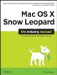
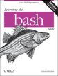
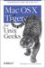
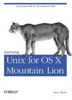

 OSX: The Missing Manual, Mountain Lion Edition
by David Pogue
The "must have" guide for all macOS users, Aug 2012.
 Learning the bash Shell (O'Reilly 3rd edition)
by Cameron Newham
Bash shell programming, flow control structures, job control.
 Mac OS X for Unix Geeks
by Brian Jepson, Ernest E. Rothman
The book to buy if you already know UNIX, Sept 2008.
 Learning Unix for OS X Mountain Lion: Going Deep With the Terminal and Shell
By Dave Taylor
Take a friendly tour of the Unix command line and 50 of the most useful utilities, Oct 2012.
 Apple Pro Training Series: OS X Support Essentials
Apple Pro Training Series: OS X Support Essentials
by Kevin M. White
Apple-certified book on macOS Mountain Lion.
OSX Internals by Jonathan Levin
A 'Russinovich level' detailed reference to the kernel and internals of macOS.
Auditing, Authentication, the MAC Framework, Code Signing, Sandboxing, SIP, AMFI and more.
AppleScript : The Definitive Guide by Matt Neuburg
An in-depth guide to AppleScript, 2nd Edition 2006.
macOSX Server Admin tools and Workgroup Manager - Remote administration tools, documentation, and utilities. There are separate downloads for each version of macOS.
To use the Server Admin Workgroup Manager with a local computer instead of a server, enter the loopback address "127.0.0.1" in the Server address field and authenticate with your local Administrator username/password.
OS X Server
OS X Recovery Disk Assistant - Repair disks or reinstall macOS.
Apple Remote Desktop - Screen sharing plus remote install (Software Distribution).
Java for OS X 2015-001 - Deprecated version of Java 6, typically required only for Adobe Apps.
Command Line Tools in OS X - Instructions to install Command Line Tools and gcc (OSX daily)
App compatibility matrix of 7,000+ apps from roaringapps.com
Macports vs Homebrew package managers:
MacPorts
A vastly larger number of packages available, owing to its maturity.
Philosophy of keep everything fully separate, by default installs to /opt does not rely on MacOS shipped libraries.
Can also be installed to your home directory, so multiple users of the machine can have different setups.
Written in TCL
Homebrew
By default installs to /usr/local though you should probably use something like ~/Homebrew
Packages are generally one or two iterations behind MacPorts, due to their dependence on MacOS shipped libraries.
Doesn't require sudo, geared towards ease of use.
Hosted on GitHub
Written in Ruby
AbiWord - Word Processor.
Acorn - Affordable Graphic Design.
AcquisitionX - BitTorrent client.
Affinity Designer - Graphic Design.
Affinity Photo - Photo Editing.
AirPort Utility - Manage Wi-Fi network and AirPort base stations.
AnyBar - A scriptable colour indicator for the macOS menubar.
Amadeus Pro - Audio editor.
Angry IP scanner - network scanner for network administrators.
AppCleaner- Delete application/preference pane files.
Appify - Script that creates Mac apps from shell scripts.
APC UPS daemon - UPS control software.
ArtRage - Paint tool for kids.
Ardour.org - Record Multi-track digital audio.
Audacity -
Audio editor and Recorder.
AudioHijack - Capture streaming audio.
BBEdit - Text Editor.
BinaryAge - TotalFinder, Spaces & DS_Store management.
BitCom FreeSee - Browse & preview pics and graphics.
Blender - 3D graphics.
Brightness -
Brightness control.
SimplyBurns -
Burn CDs & DVD's (Sourceforge link removed).
Busycal - Calendar with improved Share & Sync.
CarbonCopyCloner - Clone/backup hard drive.
Caffeine - Prevent your Mac from automatically going to sleep.
Clean Eject - Erase macOS Temporary files (spotlight etc) and Eject device, for USB-disks, cameras, SD cards.
CocoaDialog - GUI controls from the command-line.
CocoViewX - Image browser.
Deeper -
Modify hidden functions of Finder, Dock and more.
DigiDNA - Copy files without using iTunes.
DiskWarrior - Disk Repair.
Doug's Scripts - This Tag That Tag - Swap/Copy iTunes metadata.
MyDVDedit - modify the content of a DVD.
DupeZap - Search and remove duplicate files.
FastScripts - run scripts with a keyboard shortcut.
FFmpeg - Audio/video encoder.
FFmpegX - Audio/video encoder GUI.
Find Any File - Find files that Spotlight doesn't, includes bundles/packages/folders that are excluded from Spotlight search.
Fink - Open Source Games, Audio, Crypto and more.
FlySketch - Screen shots with selections/highlights etc
FTP -
Cyberduck
FTP - Fugu
FTP - PureFTPd
FTP - Transmit (Panic)
Gallery -
Photo Album website (php).
Gimp - GNU Image Manipulation Program.
Google command line - Script Youtube, Calendar, docs, picasa etc
GPG Tools - Encryption for Apple Mail messages and files.
Graphic Converter -
File format conversion and basic editing.
Grand Perspective - Graphical disk usage utility (Sourceforge link removed)
Handbrake - DVD Ripper
HTML Tidy - Check and fix HTML and XML files.
iExplorer - use an iPhone or iPad in disk mode, like a flash drive.
imageOptim - Remove image metadata & compress images without losing quality. (Free/Open Source)
Inkscape - Vector Graphics (Illustrator)
iPhone Enterprise support - Apple.
iOS configurator - Mass configure and deploy iPhones and iPads.
iPhoto Buddy - Use more than one Library with iPhoto.
iStat Menus -
System Monitor.
iStumbler - Test WiFi & Bluetooth connections.
iTerm2 -
Terminal with Search and Replay.
iTunes LAME encoder
iTunes - CopyTrans Manager - Windows application that allows quick drag & drop from PC to iDevices.
iTunes Alarm - Alarm clock.
jitouch - Add extra magic mouse & trackpad gestures.
KeyCodes - Display code for each keyboard key.
Keynote - Presentation software.
LiteIcon - Change OS X finder icons.
Little snitch - prevent applications 'dialling home'
Klieme - Time Machine Scheduler, eyesight.
Lab Tick - Brightness control for PowerBook/MacBook Pro backlit keyboards.
Mac the Ripper - DVD Ripper.
Mailbox - Redesigned email client.
Max - Rip CD's in Maximum quality & convert audio file formats.
Menu Meters - CPU, memory, disk & Network activity [El Capitan version].
Micro - Terminal-based text editor that aims to be easy to use and intuitive.
muCommander - File manager with a dual-pane interface.
NeoOffice -
MS Office compatible productivity suite (cheap).
NoMoreiTunes - Safari extension that preventing iTunes Preview and App Store pages from launching iTunes.
Open Office/Libre Office - MS Office compatible productivity suite (Free).
OmniGroup - Drawing/Diagrams, Dictionary, Outliner (note taking), Project Management.
OnyX - Maintain and optimize macOS.
Package Managers for macOS (aimed at developers)
MacPorts - Open-source community for macOS - a single software tree that attempts to track the latest releases.
Homebrew - "installs the stuff you need that Apple didn’t include" caskroom - extends Homebrew to applications.
Rudix - A collection of pre-built Unix software delivered as packages for macOS.
Pacifist - Open pkg /dmg files e.g. macOS install disks and extract files.
Parallels.com - Run win 32 programs in parallel with macOS apps (Amazon link )
Pashua - Aqua dialog windows for your scripts.
PDFtk - Command-line tool for processing PDFs.
PermissionsReset - Fix macOS folder permissions.
PhotoRec - Data recovery software - hard disk, CD-ROM & Memory Cards.
PictureCode - Noise Reduction.
Pixelmator - Image editor (alternative to PhotoShop )
PGP for Mac -
GPG Suite - secure �communication and file encryption.
Quicksilver - App/document launcher.
Quit All Open Applications - Automator.
Reggy - Regular Expression tester/viewer.
Rename files - NameChanger / NameMangler / ABetterFinderRename
Remote iOS app - Control iTunes on a mac from a remote iPhone/iPad.
RipIt - DVD Ripping,
even movies that trip up HandBrake or MacTheRipper.
RCDefaultApp - Set file associations.
Sequel Pro - Web development (MySQL).
ScreenGrabber - Convert movie to stills.
SwitchResX - Change Screen resolutions.
Scrivener - Writers studio (Outliner)
ShellHere - Open a terminal window in the current Finder window.
ShinyWhiteBox - Video capture (record Window/Desktop)
Simon - Server monitoring.
SMARTReporter - HD monitor.
Smultron - Text editor with code highlighting.
Solarized theme for macOS Terminal.
SoundStream - Screensaver.
SoX - Sound processing command line utility (Sourceforge link removed).
TotalSpaces - Spaces manager.
SplashTop - Remote access - cross platform.
Squared5 - MPEG Streamclip video converter.
Startly - QuickKeys Macros.
StartupSound - Adjust volume of the boot chime.
SuperDuper - Disk cloner, create a bootable recovery disk.
Swinsian - A better iTunes.
TeamViewer - Screen sharing/Remote control (Mac/PC/Linux).
Telestream - Screen recording/editing, pro media player/editor.
TextWrangler - Text Editor.
TenderApp - Helpdesk.
TimeMachineEditor - change the default one-hour backup interval of Time Machine.
TinkerTool - User interface tinkering.
Trance - Change CR/LF, TextForge Text Editor.
Transmit - The best FTP client.
TweaksApp - Customise macOS (donation ware).
Ukelele - Keyboard Layout Editor.
UnArchiver - A more capable replacement for "Archive Utility.app" (BOMArchiveHelper).
Unison Newsgroup reader - Now free.
Unpkg - Tailor installation packages to allow manual install.
Vienna - RSS reader.
Vim for Mac - Classic text editor.
VNC - vine viewer or Chicken - Screen sharing/Remote control (Mac/PC).
VLC Audio/Video Player - MP3, wma, DVD, Flac etc.
Video Codecs - Handy list from the University of Berlin.
VMWare Fusion - Run Wintel & Mac apps side-by-side.
VueScan - Scanner Software.
Windows Flip4Mac - QuickTime plugin for Windows Media files (.wmv).
Witch - Application/Window switcher.
World Clock - Screensaver.
WriteRoom - Shareware text editor.
Xee - Image viewer (Preview replacement).
X Lossless Decoder - MP3 and FLAC audio decoder.
Xcode Developer Tools package - Apple programming tools and utilities for Mac, iPhone, and iPad.
YASU - Yet Another System Utility.
youtube-dl - Downloading script.
Many of the commercial apps above are also available in the Apple App Store. Apple requires all App Store users to accept legal restrictions in the iTunes EULA and DRM (copy protection) buying software direct you will be subject to different terms of use.
Find more apps at MacUpdate.com or iusethis or TinyApps
SS64 Discussion Forums